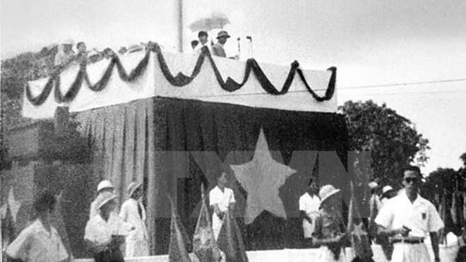
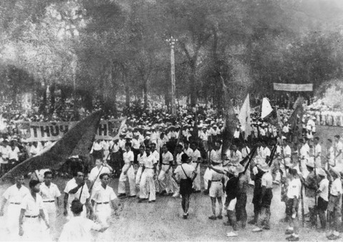
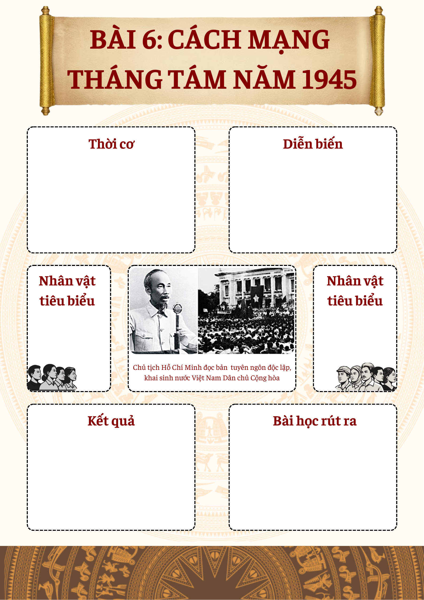

← Quay lại
Cách Mạng Tháng Tám Năm 1945
Bài giảng chính
Video giảng bài chi tiết — Bài 6
Bài giảng điện tử
Slide bài giảng — Bài 6
💡 Dùng phím ← → để chuyển slide. Nhấn nút toàn màn hình để xem đầy đủ.
Tổng kết kiến thức
Sơ đồ tư duy — Bài 6
Sơ đồ tư duy — Bài 6
Sơ đồ tư duy tổng kết toàn bộ kiến thức Cách mạng tháng Tám 1945. Nhấn nút bên dưới để mở và tương tác đầy đủ.
🗺 Mở sơ đồ tư duy đầy đủMở trong tab mới · Miễn phí · Không cần đăng nhập
💡 Vào MindMeister để kéo di chuyển, phóng to/thu nhỏ và xem chi tiết từng nhánh.
Tư liệu lịch sử
Tư liệu & Kho ảnh lịch sử
🎤 Podcast kể chuyện lịch sử
Spotify Podcast
Cách mạng tháng Tám — Kể chuyện lịch sử
Nghe podcast tường thuật lại những khoảnh khắc hào hùng của Cách mạng tháng Tám 1945 qua giọng kể sống động.
📱 Clip ngắn — Tóm tắt diễn biến
Tóm tắt
Tóm tắt Cách mạng tháng Tám
Tư liệu gốc
Mốc lịch sử Cách mạng tháng Tám
Tư liệu gốc
Bác Hồ đọc Tuyên ngôn Độc lập 2/9/1945
📷 Ảnh tư liệu lịch sử

Chủ tịch Hồ Chí Minh đọc Tuyên ngôn Độc Lập tại Quảng trường Ba Đình
Nhân dân Hà Nội chiếm Phủ Khâm sai (19-8-1945)

Nhân dân Sài Gòn mít tinh mừng khởi nghĩa thắng lợi (25-8-1945)
Ôn thi nhanh
Cẩm nang từ khóa vàng — Bài 6
| Từ khóa / Nội dung | Kiến thức cần nhớ | ⚠️ Lưu ý tránh bẫy |
|---|---|---|
| Thời cơ khách quan | Nhật đầu hàng Đồng minh không điều kiện (15/8/1945). | Không phải lúc Nhật đảo chính Pháp (9/3). |
| Thời cơ chủ quan | Chuẩn bị 15 năm; Khối liên minh công - nông; Đảng lãnh đạo. | Đây là nhân tố quyết định nhất. |
| Hội nghị toàn quốc | Quyết định Tổng khởi nghĩa; Thành lập Ủy ban khởi nghĩa toàn quốc. | Diễn ra trước Đại hội Quốc dân. |
| Đại hội Quốc dân Tân Trào | Tán thành Tổng khởi nghĩa; Cử ra Ủy ban dân tộc giải phóng. | Do Hồ Chí Minh làm Chủ tịch. |
| Hình thức đấu tranh | Kết hợp đấu tranh chính trị với vũ trang. | Đấu tranh chính trị đóng vai trò quyết định thắng lợi. |
| Địa bàn khởi nghĩa | Kết hợp nông thôn với thành thị. | Diễn ra nhịp nhàng, không tách rời. |
| Tính chất cách mạng | Cách mạng giải phóng dân tộc (Tính chất điển hình). | Có tính dân chủ nhưng GPDT là hàng đầu. |
| Bài học kinh nghiệm | Nghệ thuật chớp thời cơ; Tập hợp lực lượng (Mặt trận Việt Minh). | Từ khóa "Thời cơ" xuất hiện nhiều nhất trong đề thi. |
Công nghệ cao
Trải nghiệm VR / AR / 3D
Chọn trải nghiệm bạn muốn khám phá:
Nhấn vào một trong các thẻ bên dưới để bắt đầu tải trải nghiệm thực tế ảo.
📱 Quét QR
Thực tế ảo 360°
Thời khắc Chủ tịch Hồ Chí Minh đọc Tuyên ngôn Độc lập tại Quảng trường Ba Đình ngày 2/9/1945
▶ Bắt đầu trải nghiệm
📡 Kết nối internet · Khuyến nghị tai nghe
📱 Quét QR
Mô hình 3D — Kỳ Đài Độc Lập
Khám phá Kỳ đài nơi lá cờ đỏ sao vàng được kéo lên lần đầu tiên 2/9/1945 — xoay 360°
▶ Xem mô hình 3D
🖰 Kéo chuột để xoay · Cuộn để zoom
📱 Quét QR
Di tích 48 Hàng Ngang
Nơi Chủ tịch Hồ Chí Minh viết bản Tuyên ngôn Độc lập — tham quan thực tế ảo 360°
▶ Tham quan di tích
📡 Kết nối internet · Kéo chuột để nhìn xung quanh
Bản đồ AR tổng khởi nghĩa toàn quốc
Theo dõi diễn biến từ Hà Nội → Huế → Sài Gòn trên bản đồ tương tác.
Quân lệnh số 1 được ban bố vào thời điểm nào?
Sáng 13/8/1945
Sự kiện nào đánh dấu thời cơ "ngàn năm có một"?
Nhật Bản đầu hàng Đồng minh không điều kiện.
Ai là Chủ tịch Ủy ban Dân tộc giải phóng Việt Nam?
Hồ Chí Minh
Đơn vị giải phóng quân Võ Nguyên Giáp tiến về thị xã nào đầu tiên?
Thị xã Thái Nguyên (16/8/1945)
4 tỉnh giành chính quyền sớm nhất cả nước?
Bắc Giang, Hải Dương, Hà Tĩnh, Quảng Nam
Ngày giành chính quyền tại Hà Nội?
19/8/1945
Ngày giành chính quyền tại Huế?
23/8/1945
Ngày giành chính quyền tại Sài Gòn?
25/8/1945
Ý nghĩa văn kiện "Tuyên ngôn Độc lập" là gì?
Khai sinh nước Việt Nam Dân chủ Cộng hòa
Nhân tố khách quan quan trọng nhất giúp CM tháng Tám thành công?
Chiến thắng của Đồng minh tiêu diệt phát xít Nhật
Nhân tố chủ quan quyết định nhất?
Sự lãnh đạo đúng đắn của Đảng và Hồ Chí Minh
Lực lượng đóng vai trò nòng cốt trong Cách mạng tháng Tám?
Khối liên minh công - nông
Hình thức giành chính quyền là gì?
Khởi nghĩa vũ trang
CM tháng Tám lật đổ chế độ nào tồn tại hơn 1000 năm?
Chế độ phong kiến
Văn kiện nào thông qua 10 chính sách của Việt Minh?
Đại hội Quốc dân Tân Trào
Kẻ thù chính từ tháng 3/1945 đến tháng 8/1945?
Phát xít Nhật
Ý nghĩa quốc tế lớn nhất của CM tháng Tám?
Góp phần làm tan rã hệ thống thuộc địa của chủ nghĩa thực dân
Bài học về xây dựng lực lượng là bài học về gì?
Khối đại đoàn kết dân tộc (Mặt trận Việt Minh)
Tên gọi của Việt Nam sau cách mạng tháng Tám?
Việt Nam Dân chủ Cộng hòa
"Chọc thủng khâu yếu nhất trong hệ thống thuộc địa" nói về sự kiện nào?
Cách mạng tháng Tám 1945
Học sâu · Trải nghiệm
Dự án & Hoạt động trải nghiệm
Podcast Lịch sử
Thu âm một tập podcast kể lại Cách mạng tháng Tám qua lời nhân chứng tưởng tượng.
Cá nhân / NhómTập làm phóng viên
Viết bài báo tường thuật sự kiện ngày 2/9/1945 như một phóng viên tại chỗ.
Cá nhânNhật ký lịch sử
Viết nhật ký từ góc nhìn của một thanh niên Hà Nội trong những ngày tháng Tám 1945.
Cá nhânTemplate Poster — Tự tóm tắt bài theo cách riêng
Tải template poster Bài 6, điền thông tin và trang trí theo phong cách của bạn. Một cách sáng tạo để ghi nhớ kiến thức!

In ra hoặc dùng trực tiếp trên máy tính — điền vào các ô kiến thức quan trọng của Bài 6.
↓ Tải poster về
{kind=link}